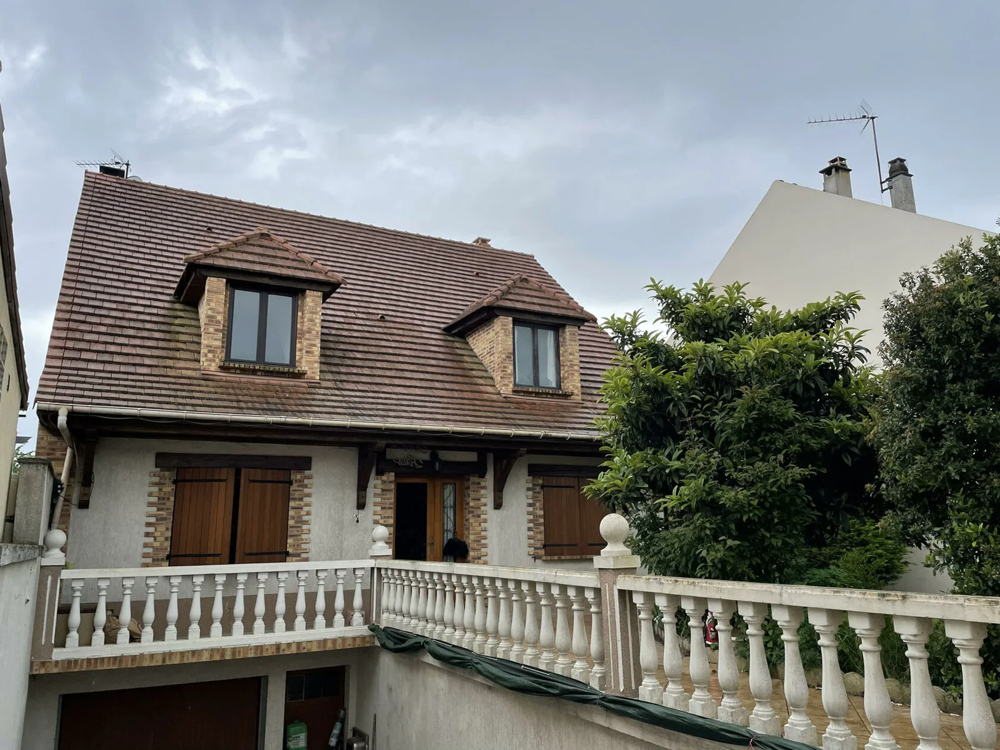
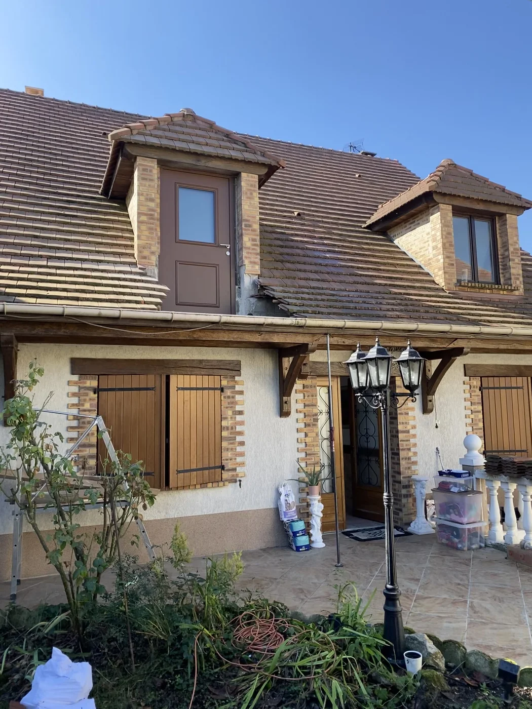

Le projet
Modification de façade sur une maison à Villevaudé : nous avons transformé une fenêtre de toit (lucarne) en porte-lucarne sur mesure, créant un nouvel accès. Une intervention qui touche à la structure et à l'aspect extérieur du bâtiment, donc réalisée dans les règles.
Comme toute modification de l'aspect extérieur, le chantier a fait l'objet d'une déclaration préalable de travaux en mairie (dossier établi avec architecte) — un gage de sérieux et de conformité.
Avant / Après


Notre intervention
- Dépose de la fenêtre de toit existante et ouverture de la baie
- Création de la porte-lucarne sur mesure et reprise de la maçonnerie / couverture autour
- Étanchéité et finitions (briques, tuiles, raccords)
- Constitution du dossier de déclaration préalable en mairie
D'autres photos de ce chantier seront ajoutées prochainement.